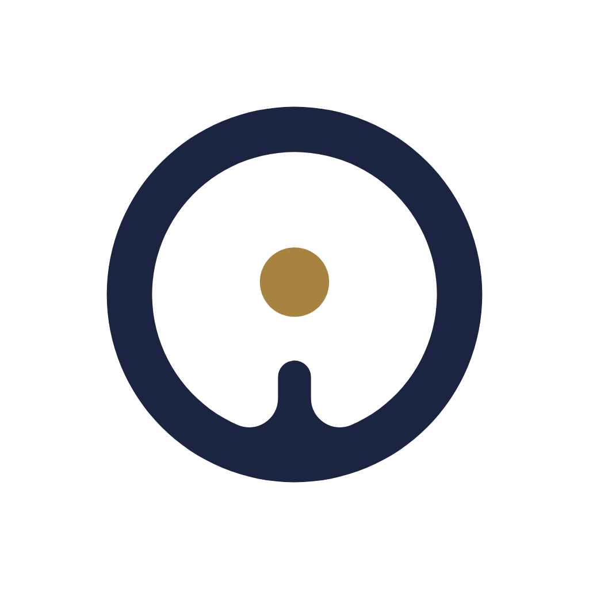
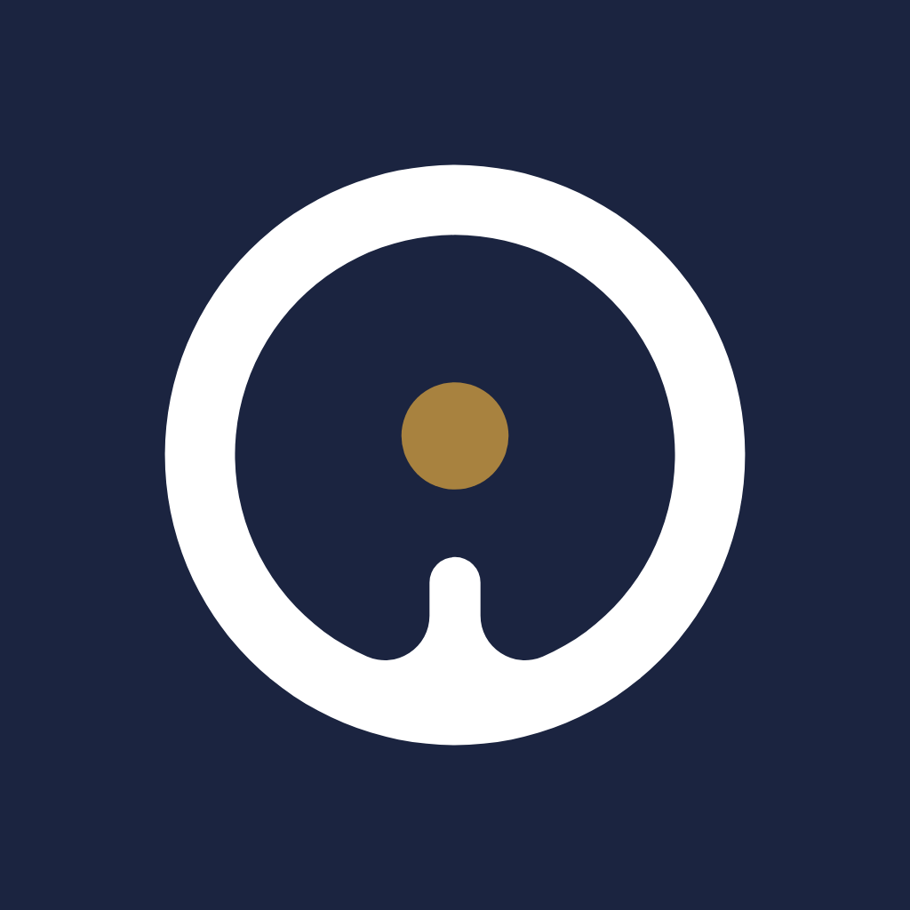
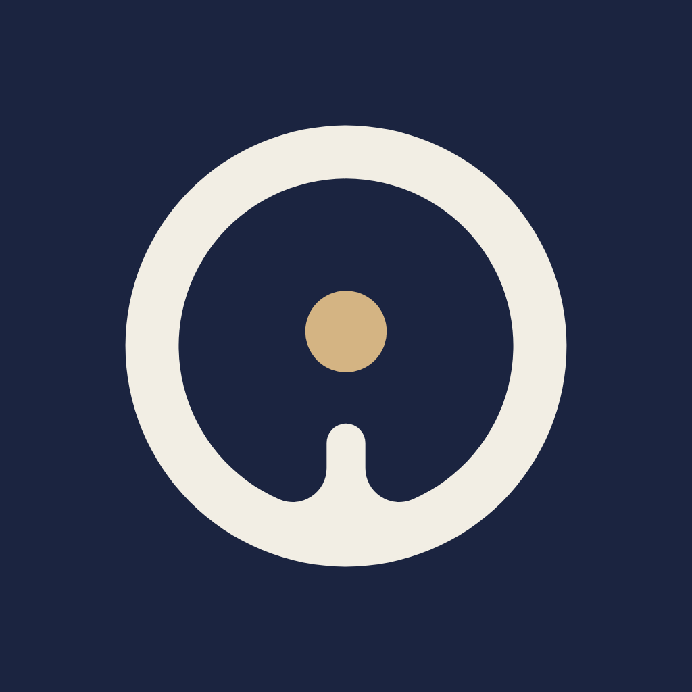
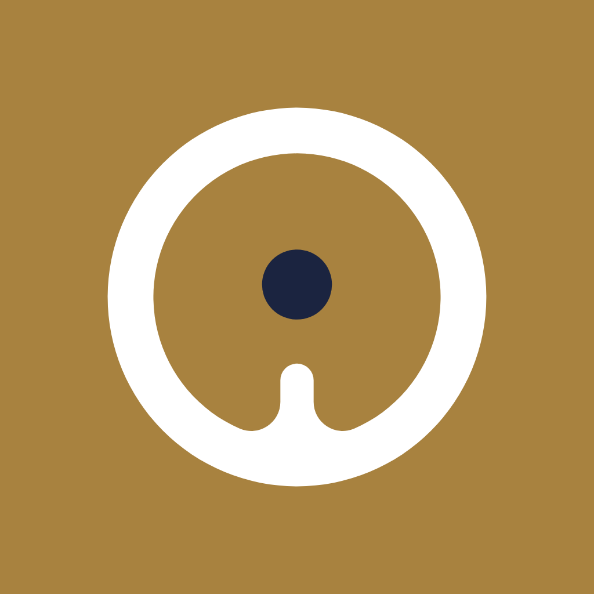
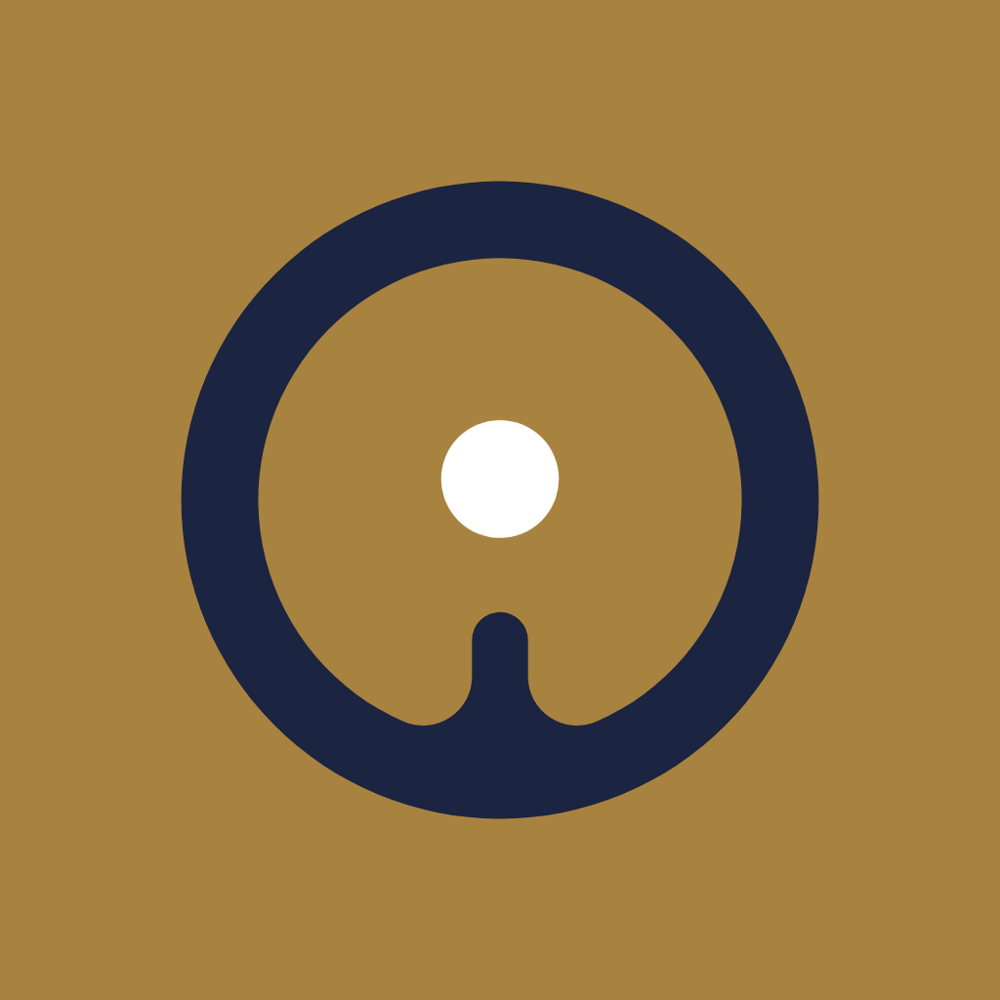
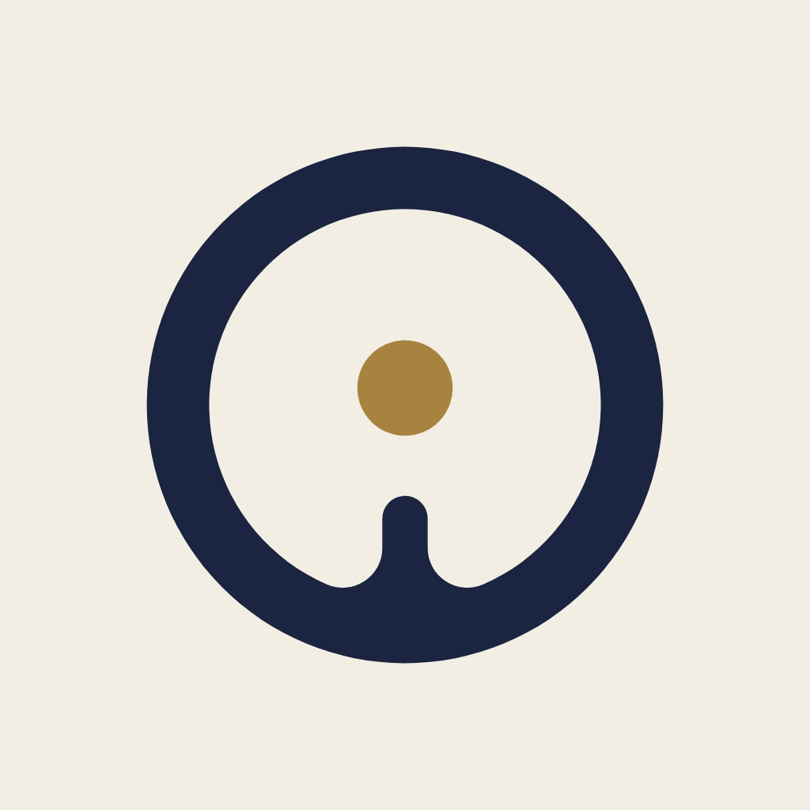
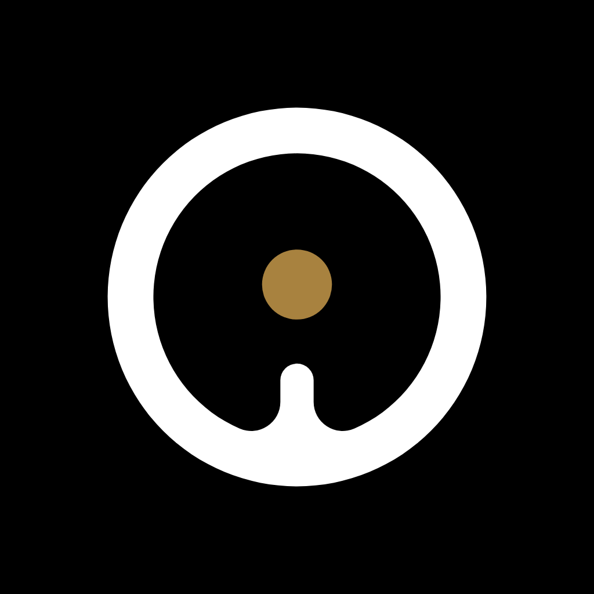
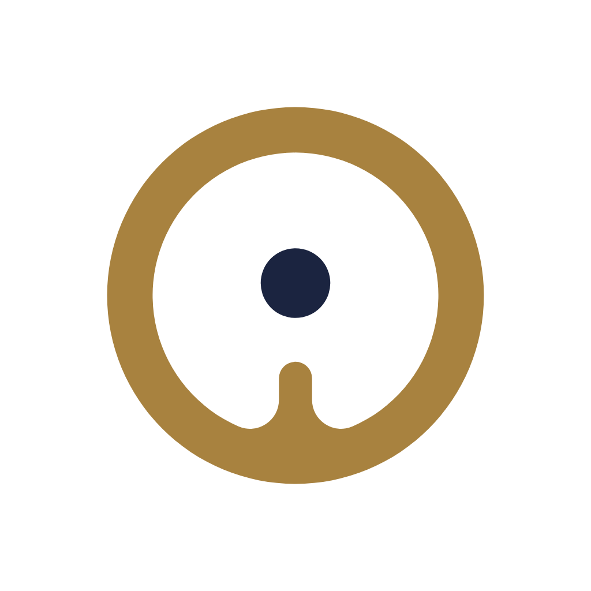

Pour enregistrer : touchez une image pour l’ouvrir, restez appuyé dessus, puis touchez « Enregistrer dans Photos » (ou « Ajouter à Photos »). Chaque image est en haute définition : 2048 px pour le logo seul, avec fond transparent, et 1024 px pour les icônes.
Tout d’un coup : télécharger le dossier complet (zip, avec les SVG).
La couleur derrière sert juste à le voir ; elle n’est pas dans le fichier.







